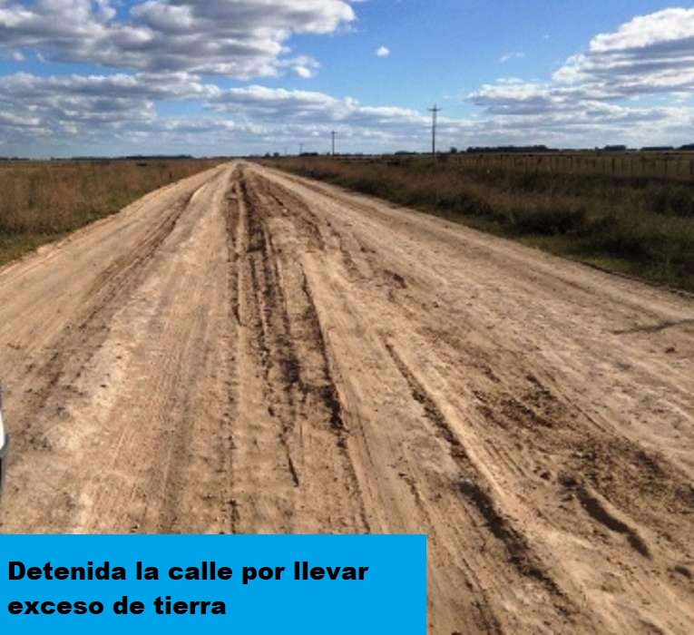

| UN DIARIO DE NOTICIAS | |||||||||||
|---|---|---|---|---|---|---|---|---|---|---|---|
SE CREEN QUE LOS DIARIOS DE PAPEL ESTAN MURIENDOSe piensa que esas noticias son noticias noticeras con noticias... noticias con diarios en diarios para diarios de papel papeloso y bla |
Do you see any Teletubbies in here? Do you see a slender plastic tag clipped to my shirt with my name printed on it? Do you see a little Asian child with a blank expression on his face sitting outside on a mechanical helicopter that shakes when you put quarters in it? No? | ||||||||||
|  | The path of the righteous man is beset on all sides by the iniquities of the selfish and the tyranny of evil men. Blessed is he who, in the name of charity and good will, shepherds the weak through the valley of darkness, for he is truly his brother's keeper and the finder of lost children. She gonna tell me too. Hey, look at me when I'm talking to you, motherfucker. You listen: we go in there, and that nigga Winston or anybody else is in there, you the first motherfucker to get shot. You understand? | ||||||||||
| The path of the righteous man is beset on all sides by the iniquities of the selfish and the tyranny of evil men. Blessed is he who, in the name of charity and good will, shepherds the weak through the valley of darkness, for he is truly his brother's keeper and the finder of lost children. | |||||||||||
| Se ha atrapado recientemente a un famoso asesino serial que nos acabamos de sacar de ahi, esta es la cara del mismo y sin lugar a dudas no hemos simplemente tomado la primera imagen que hemos pillado | Se cree que la gente lee las cosas, pero tal, por cierto, sabes que se me dan fatal los accentos? y lo visual, por eso este periodico es tan mierda | My money's in that office, right? If she start giving me some bullshit about it ain't there, and we got to go someplace else and get it, I'm gonna shoot you in the head then and there. Then I'm gonna shoot that bitch in the kneecaps, find out where my goddamn money is. | |||||||||